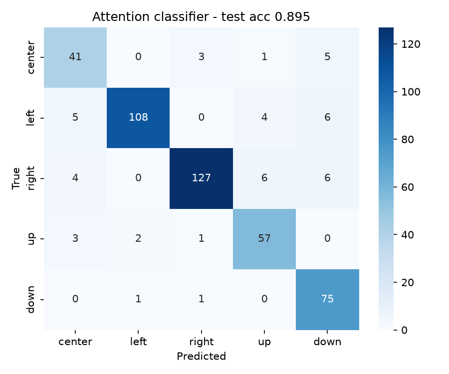
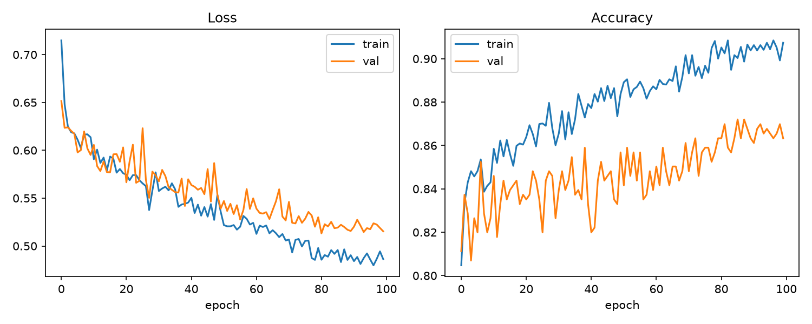
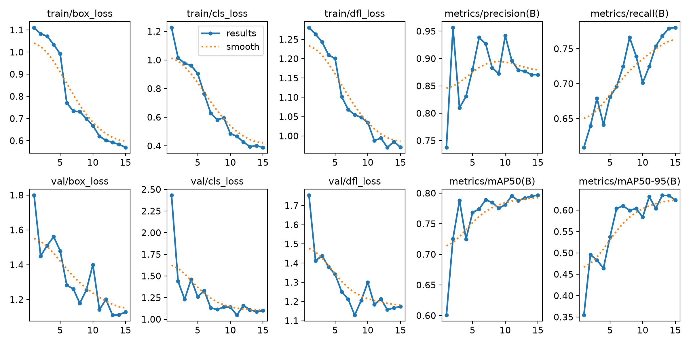
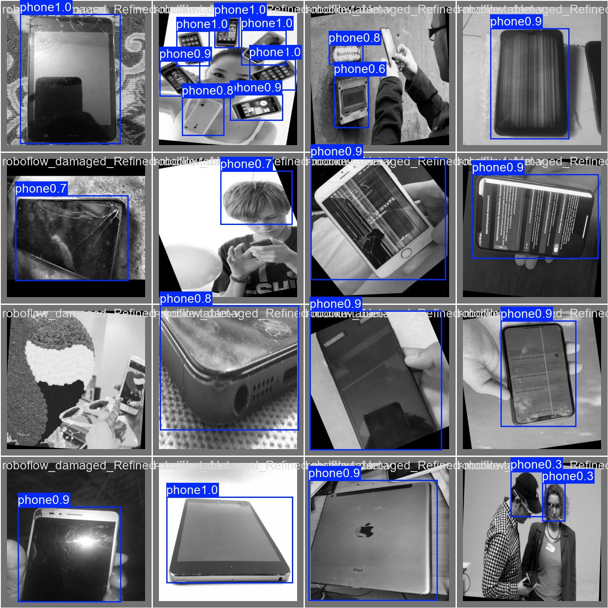

Catch exam cheating in real time – right in the browser.
ProctorAI watches a student's webcam during an online exam and flags the four most common cheating signals: looking away, a phone in view, another person in the frame, and the student leaving. Every model runs client-side, so no video ever leaves the device.
How it works
Two trained models plus a face-landmark extractor, stitched together with a temporal event engine.
Landmarks → features
468 face points are centred on the nose tip and scaled by inter-ocular distance, plus 10 explicit head-pose geometry cues, giving a 1,414-dim vector that is independent of face size, position and camera.
Two deep models
A PyTorch MLP classifies gaze direction from the landmark vector; a COCO-pretrained YOLOv8n is fine-tuned on a phone dataset. Both are exported to ONNX.
Temporal event logic
A state must persist ≥ 1 s to become a violation (no false alarms from a blink or quick glance). Events are timestamped and penalised to produce an integrity score.
Dataset & code details
Both datasets are public and downloaded automatically by scripts/download_data.py.
🧭 Head-Pose Image Database
Faces photographed at 93 known (tilt, pan) angle combinations – pan −90°…+90°, tilt −90°…+90° in 15°/30° steps. We keep 2,790 unique poses, extract MediaPipe landmarks from each image and its horizontal flip, and map angles to 5 attention classes (|angle| ≤ 15° = looking at screen).
| Source | Hugging Face · StevenLe456/head-pose |
| Samples used | – (train / val / test split by source image) |
| Classes | center · left · right · up · down |
📱 Phone Detection (COCO format)
Roboflow-curated images of mobile phones with bounding boxes. Converted to YOLO format by scripts/prepare_phone_dataset.py and used to fine-tune YOLOv8n for a single phone class at 320 px.
| Source | Hugging Face · harshdadiya-wappnet/phone_detection |
| Split | 529 train · 51 valid · 25 test images |
| Annotations | 589 phone boxes (train) |
Repository layout
ProctorAI/ ├── scripts/ │ ├── download_data.py # fetch both datasets from Hugging Face │ ├── prepare_phone_dataset.py # COCO → YOLO format + data.yaml │ ├── extract_landmarks.py # MediaPipe landmarks → 1414-d features (+ flip aug) │ ├── train_attention_model.py # PyTorch MLP, metrics, ONNX export │ ├── train_phone_detector.py # YOLOv8n fine-tune, test mAP, ONNX export │ └── common.py # shared feature engineering (mirrored in web/js/features.js) ├── models/ # trained weights: .pt + .onnx + metrics .json ├── web/ # this site (static, deployed on Vercel) └── docs/ # report, slides, figures
Training details & results
Attention classifier (PyTorch MLP)
| Architecture | 1414 → 256 → 128 → 5 · BatchNorm · ReLU · Dropout |
| Optimiser | AdamW, lr 1e-3, cosine schedule, label smoothing 0.05 |
| Augmentation | horizontal flip (label-swapped) + Gaussian landmark jitter |
| Test accuracy | – |
| Macro F1 | – |
| Attentive vs looking-away accuracy | – |
| Train / val / test | – |
Phone detector (YOLOv8n fine-tuned)
| Base weights | yolov8n.pt (COCO) |
| Image size / epochs | – |
| Augmentation | mosaic, flip, HSV, rotation ±5°, scale 0.4 |
| Test mAP@50 (fine-tuned vs COCO baseline) | – |
| Test mAP@50-95 | – |
| Precision / Recall | – |
| Deployed in demo | COCO YOLOv8n (person + cell phone); fine-tuned model in models/phone_yolov8n.onnx |




Project report, presentation & video
GitHub repository
Source code, dataset scripts and trained weights.
📄Project report
Problem, datasets, architecture, training, results.
📊Presentation
Slide deck used in the recorded walkthrough.
▶️YouTube video
Voice-over presentation + live demo.